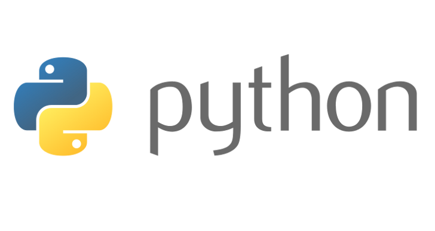

repl.it
Summary
- Describe some programming concepts or structures you learned in this unit that you applied in your story.
While creating the interactive story, there was a lot of if, else statements that were used. Without the if, else statements there will not be any seperate paths. There was also a high use in loops. With loops, it allows the player to constantly input any answer if wrong.
- Think back to other stories you read, identify one or two stories you particularly like? Why?
One story that I enjoyed the most was Sanic. It was funny, and with every choice there was always a different event. Also, it was very unexpected.